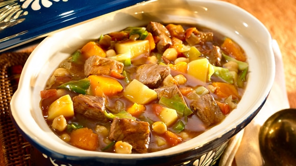
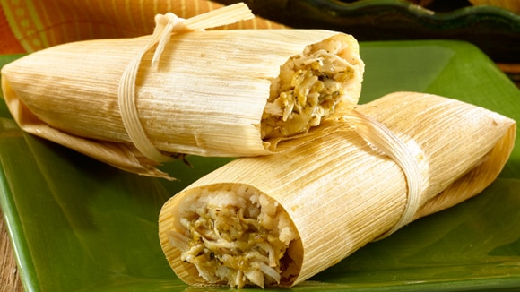
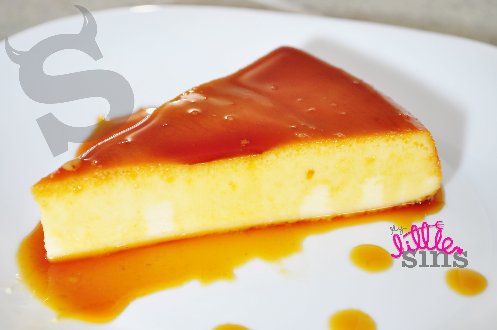
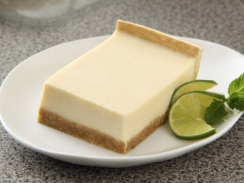
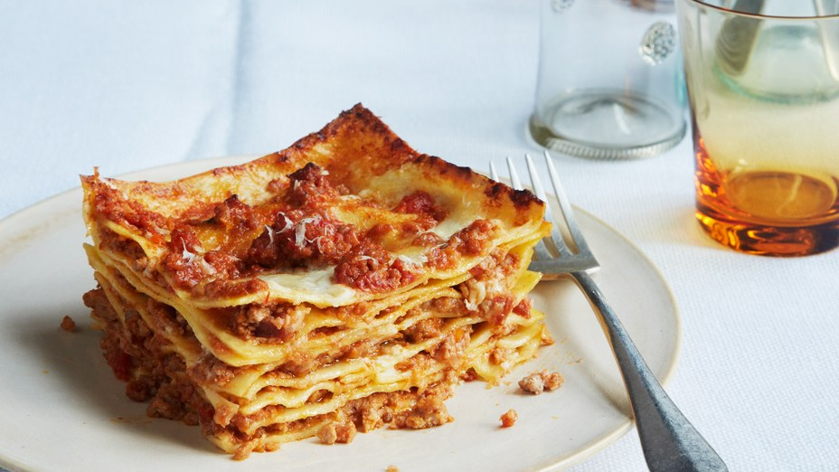
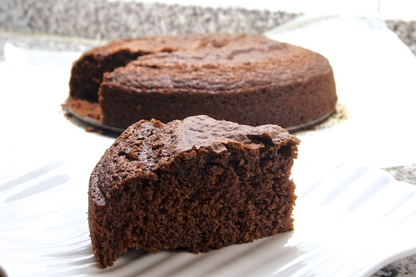
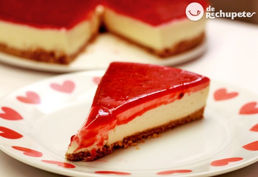

Carnes
En México es muy tradicional preparar taquizas de guisados, para ofrecer variedades de alimento a los invitados. Prepara estos ricos guisados; una jugosa tinga de pollo, picositas rajas con crema, suave chicharrón en salsa verde, y ricas papas con chorizo servidos en una cazuela de barro.

Tipico
Clásico tamal de cazuela de masa de maíz, relleno de pechuga de pollo y chile poblano en salsa de chile pasilla seco a base de tomate. No te pierdas esta receta tradicional mexicana que está llena de sabor y la puedes compartir con tus seres queridos.

Dulces
Prepara este delicioso flan de queso y café para compartir con todos en casa un postre fácil, delicioso y que no necesitas horno para hacer. Su textura suave e intenso sabor a café y vainilla conquistarán a todos.

Dulces
Este postre es para los amantes del cítrico y los postres fríos, con toques de sabores dulces. Una receta fácil y deliciosa que no puedes dejar pasar.

Casera
Una lasagna muy fácil de hacer; va preparada con salsa de tomate, carne molida y queso. Una combinación única y deliciosa que no puedes dejar pasar.
Bizcocho de Chocolate

El clásico bizcocho de chocolate casero fácil y jugoso que puedes hacer utilizando la medida del yogur, es decir, utilizas el recipiente del yogur que vas a añadirle para medir la cantidad del resto de ingredientes: harina, azúcar, aceite, cacao… De esta forma, esta receta se ha convertido en una de las más populares por su sencillez y porque, simplemente, está riquísimo!
Bátido de fresas y plátano

Receta fácil donde las haya son los batidos caseros. Normalmente en verano los hago con helado y si encima son helados hechos en casa de los muchos que elaboro, no os quiero ni contar cuál es el resultado, porque cualquiera de vosotros que ya haya hecho alguno, lo sabe.
Tarta de Queso

Es una tarta de queso súper sencilla y barata que puede hacer cualquiera que se atreva con la repostería, su preparación no tiene nada del otro mundo y os aseguro que su sabor es delicioso, seguro que muchos de vosotros ya la conocéis. Además no necesita horno para su elaboración y es una receta de queso muy fácil de hacer que tiene unos ingredientes muy económicos.